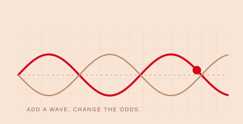
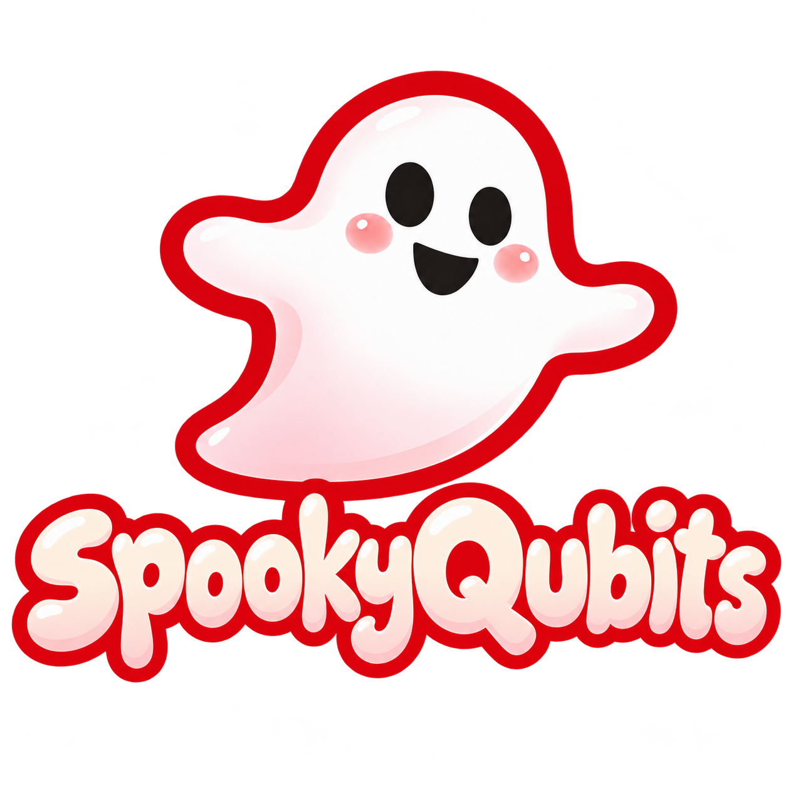
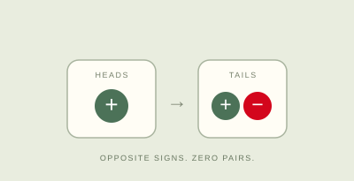
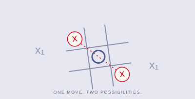
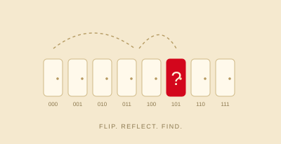
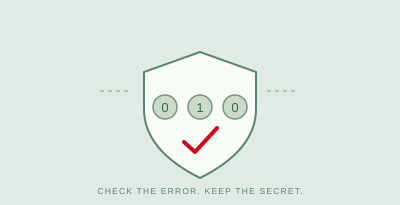
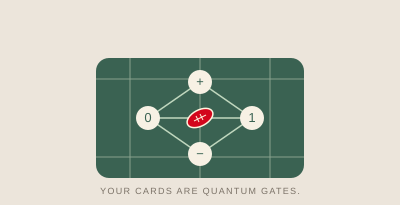

Browser + tabletop01Interference
Catch the Photon
Can you make light disappear?
Play a wave. Brighten your detector. Cancel your opponent’s. Then see who catches the photon.
THE QUANTUM PLAYGROUND
Catch a photon. Outsmart a ghost.
Get curious about the quantum world, one move at a time.

A little spooky. A lot to discover.PICK A QUESTION. PLAY WITH THE ANSWER.
Six ways in. Plenty of “wait, what?” moments.
Start anywhere—or try Ghost Coin first.

Browser + tabletop01Interference
Can you make light disappear?
Play a wave. Brighten your detector. Cancel your opponent’s. Then see who catches the photon.

Browser + tabletop02Interference
Can a quantum coin beat you?
Turn a penny flip into a battle of hidden signs. Discover a winning trick—and the counter-trick.

Browser + tabletop03Superposition
What if your move had two homes?
A familiar tic-tac-toe board gets spooky: paired marks, shared squares, and a chain of surprising collapses.

Browser + tabletop04Quantum search
Which room is hiding the ghost?
Flip a sign. Reflect around the average. Build up a search wave—and learn when to stop.

Browser + tabletop05Error correction
Can you fix a secret without looking?
The Gremlin brings the noise. The Guardian checks for mistakes. Protect the ghost without revealing it.

Tabletop kit06Qubit gates
What’s your next quantum play?
Your football is a qubit. Your cards are quantum gates. Find a path through six states to the end zone.
Every game has a facilitator guide. Browser games also work offline when downloaded.
LESS PREP. MORE “AHA!”
You don’t need to be a quantum expert to start a good conversation. Bring a question, let students make a prediction, and see what happens next.
Get the classroom collectionZIP · all browser games, guides, and printables
Try Ghost Coin for signed chips, Catch the Photon for waves, or Ghost Grid for a familiar board with unfamiliar moves.
Share a screen, project a game for the class, or print a tabletop kit. Each guide lists materials, timing, and setup.
What did you predict? What changed? Which part of the game models quantum behavior—and where does the analogy end?
These games connect quantum concepts to cards, coins, coordinates, and familiar arithmetic. Some use quantum calculations; others are teaching metaphors. The guides help you explain both the connection and its limits.
Developed and adapted using QCaMP classroom materials. Ghost Grid draws on Allan Goff’s quantum tic-tac-toe; Qubit Touchdown is by Kristina Armbruster, Mary Duda, and Thomas Wong. Original credits are included with the games and guides.